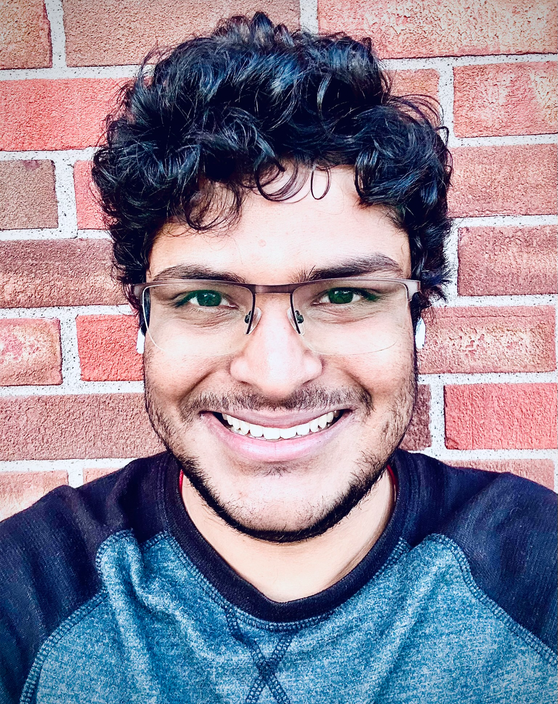

Srinivasa Kartik Nemani
Post-Doctoral Fellow, University of Alabama at Birmingham
I am a Fellow in the Department of Mechanical and Materials Engineering at The University of Alabama at Birmingham.
I completed my Ph.D. at Purdue University, advised by Dr. Babak Anasori.
Earlier, I earned my Masters in mechanical engineering from the University of Toledo advised by Dr. Hossein Sojoudi.
Research Interests
I am broadly interested in Materials for Extremes, Layered Ceramics and Polymer Derived Ceramics, their applications to Nuclear, Aerospace, & Energy.
My long-term research goal is to integrate atomistic design of layered ceramic materials with polymer‑derived precursors to create next‑generation structural systems, enabled by state‑of‑the‑art manufacturing approaches.
Current Research Thrusts
- Functionally Graded Materials: Developing compositionally and microstructurally graded ceramic architectures that enable tailored thermal, mechanical, and oxidation‑resistant responses for extreme‑environment applications, with emphasis on integrating high‑entropy phases and engineered interfaces.
- Materials for Nuclear Extremes: Designing and evaluating radiation‑tolerant ceramics and ceramic‑matrix composites through controlled defect engineering, high‑temperature stability studies, and microstructure‑by‑design frameworks to support next‑generation fission and fusion systems
- 2D layered Ceramics and Polymer Derived Hard Materials: Advancing synthesis and integration of MXenes, layered carbides, and high‑entropy 2D systems into polymer‑derived ceramic platforms to create ultrahigh‑temperature, oxidation‑resistant, and mechanically robust hybrid materials with tunable interfacial chemistry.
Selected Publications
For a complete list, please see Google Scholar.
Recent Papers
-
Order‑to‑disorder transition due to entropy in layered and 2D carbides
BC Wyatt, Y Yang, PP Michałowski,... (10) S.K.Nemani, et al. Science, 2025. [PDF] -
MXene‑derived TiB₂ formation in B₄C at high temperatures
N Chandran BS, A Thakur, SK Nemani, N Moharana, CPH Scott, et al. Advanced Composites and Hybrid Materials, 2025. [PDF] -
Ti₃C₂Tₓ MXene–Zirconium Diboride Based Ultra‑High Temperature Ceramics
SK Nemani, N Gilli, S Goldy, A Kumar, Y Im, AJ Vorhees, BC Wyatt, et al. Advanced Science, 2025. [PDF]
Teaching
Courses
- Course Name 1 (Semester) - Description
- Course Name 2 (Semester) - Description
Tutorials & Workshops
- Tutorial Title 1 - Venue, Year
- Tutorial Title 2 - Venue, Year
Selected Awards and Honors
Web of Talents, 2025. Read more
Purdue University, 2024. Read more
American Ceramic Society (ACerS), 2024.
University of Toledo, 2018.
Recent and Upcoming Talks
Invited Speaker Young Investigator Forum, ICACC (International Conference on Advanced Ceramics and Composites, January 2025.
Invited Speaker National Science Day Gayatri Vidya Parishad College of Engineering Visakhapatnam, India, February 2024.
Invited Speaker Andhra University, College of Mechanical Engineering, February 2024.
News & Updates
- Excited to be a part of the 2026 cohort of the Postdoctoral Grant Writing Workshop at UAB!
- The First extensive report on MXene-Zirconium-Diboride based UHTCs is published now in Advanced Science.
- Our Extensive Study on High Entropy MXenes is published now in Science.
- Received the Global Web of Talents Silver award! Humbled!
- Our study on ZrB2-MXene UHTCs received the GEMS (Graduate Excellence in Materials Science) Diamond Award at MS&T 2024!
Service
Professional Service
- Guest Editor: Ceramics
- Reviewer: Nature, ACerS, ECerS, Elsevier, ACS (Please see CV for complete list)
- Committee Member: Education and Professional Development Committee (ACerS) 2022-Present
- Session Chair: ICACC 2025, Young Investigator Forum
MXenes Symposium MRS Spring 2022, Fall 2022
Advanced Materials for harsh environments MS&T Fall 2021 - Organiser IGNITE MSE 2023, 2024
Contact
Email: nemanis@uab.edu
Office: Gorrie hall GH5201, University of Alabama at Birmingham
Address:
Mechanical and Materials Engineering
University of Alabama
Birmimgham, AL, 35210
Links:
Google Scholar |
Scopus |
LinkedIn